Two-Asset Portfolio Variance
Lecture 6: Bond Portfolio Construction
Learning Objectives
By the end of this lecture you should be able to:
- Explain the Markowitz mean-variance framework and why direct application to bond portfolio construction is difficult.
- Distinguish systematic risk from idiosyncratic risk in a bond portfolio.
- Compute tracking error from active returns and annualize it correctly.
- Distinguish backward-looking tracking error from forward-looking tracking error.
- Explain the cell-based approach to bond portfolio construction and identify its limitations.
- Describe why pure bond indexing is difficult in practice.
- Explain the purpose of a multi-factor fixed-income risk model.
- Explain what exposure is and how it is measured.
- Explain how factor covariance and residual risk are estimated.
- Use a multi-factor model to identify the sources of portfolio risk relative to a benchmark.
- Explain how a manager can construct and rebalance a bond portfolio using a multi-factor model and an optimizer.
1 Brief Review of Portfolio Theory and Risk Decomposition
Bond portfolio construction begins with a simple question:
How do we choose a set of bonds whose risk exposures match the investor’s objective?
For a benchmark-aware manager, the objective is usually not “minimize total risk.” It is “earn active return without taking more active risk than the client allows.” That shift changes the relevant risk measure from portfolio volatility to tracking error.
The starting point is Markowitz mean-variance portfolio theory. For a two-asset portfolio:
\[ E(R_p)=w_1E(R_1)+w_2E(R_2), \]
and
\[ \sigma_p^2 =w_1^2\sigma_1^2+w_2^2\sigma_2^2 +2w_1w_2\rho_{12}\sigma_1\sigma_2. \]
Expected return is a weighted average. Risk is not. Portfolio risk depends on covariance, or equivalently correlation.
The Markowitz framework has three required inputs:
- expected returns;
- variances or standard deviations;
- covariances or correlations.
The theory says that an investor should choose portfolios that offer the best expected return for a given level of risk, or the lowest risk for a given expected return. Those portfolios form the efficient frontier.
TipCore Intuition
Diversification works because assets do not move perfectly together. A portfolio of bonds is not risky only because the individual bonds are risky; it is risky because of how their interest-rate, spread, credit, liquidity, and optionality exposures move together.
NoteWorked Example: Correlation and Diversification
Suppose two bonds each have annual return volatility of 8%, and the portfolio is 50% in each bond.
If correlation is +1:
\[ \sigma_p = 8.0\%. \]
If correlation is 0:
\[ \sigma_p =\sqrt{0.5^2(0.08)^2+0.5^2(0.08)^2} =5.66\%. \]
If correlation is -1:
\[ \sigma_p=0. \]
The expected return is unchanged by the correlation assumption, but the risk changes dramatically.
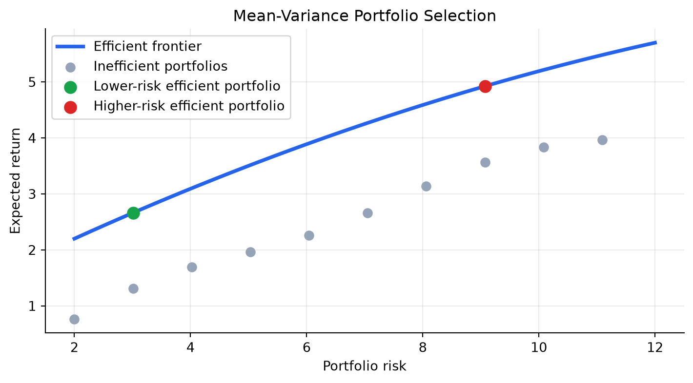
Portfolio risk can also be decomposed into:
- Systematic risk: common risk factors that affect many securities, such as Treasury curve changes, credit spread widening, mortgage prepayment risk, or volatility shocks.
- Idiosyncratic risk: issuer-specific or issue-specific risk, such as one company’s downgrade, a specific bond’s liquidity problem, or one mortgage pool’s unusual prepayment behavior.
In a broad equity portfolio, idiosyncratic risk can often be diversified away with a moderate number of stocks. In bond portfolio construction, idiosyncratic risk can remain large because fixed-income benchmarks may include thousands of securities, many of which are illiquid, sector-specific, callable, securitized, or issuer-specific.
NoteShort Example: Systematic versus Idiosyncratic Risk
A 75 basis point rise in Treasury yields is systematic for a high-quality bond portfolio because many bonds lose value together. A surprise downgrade of one bank bond is idiosyncratic because it mainly affects that issuer. A portfolio can be nearly neutral to Treasury duration and still have large idiosyncratic risk if it holds concentrated issuer positions.
%%{init: {"theme": "base", "themeVariables": {"fontFamily": "Inter, Arial, sans-serif", "lineColor": "#64748b"}}}%%
flowchart LR
A["Portfolio risk"] --> B["Systematic risk<br/>curve, spread, volatility, sector factors"]
A --> C["Idiosyncratic risk<br/>issuer, issue, liquidity, documentation"]
B --> D["Measured with factor exposures"]
C --> E["Reduced with diversification<br/>but not eliminated automatically"]
D --> F["Tracking error versus benchmark"]
E --> F
classDef root fill:#dbeafe,stroke:#2563eb,stroke-width:3px,color:#0f172a;
classDef systematic fill:#dcfce7,stroke:#16a34a,stroke-width:2.5px,color:#052e16;
classDef idio fill:#fee2e2,stroke:#dc2626,stroke-width:2.5px,color:#450a0a;
classDef result fill:#ede9fe,stroke:#7c3aed,stroke-width:2.5px,color:#2e1065;
class A root;
class B,D systematic;
class C,E idio;
class F result;
linkStyle default stroke:#64748b,stroke-width:2.5px;
1.1 Application of Portfolio Theory to Bond Portfolio Construction
Markowitz theory is conceptually useful, but direct mean-variance optimization over thousands of bonds is difficult. If there are \(N\) candidate bonds, the manager needs \(N\) expected returns, \(N\) variances, and
\[ \frac{N^2-N}{2} \]
covariances. With 100 bonds, that is 4,950 covariances. With 6,500 benchmark bonds, it is more than 21 million pairwise covariances.
NoteWorked Example: Covariance Count
If a manager considers 250 candidate bonds:
\[ \frac{250^2-250}{2}=31{,}125 \]
covariances must be estimated. The problem is not arithmetic; it is estimation risk. Small errors in expected returns and covariances can produce unstable portfolio weights.
The practical fixed-income solution is to model returns through a smaller set of common factors:
\[ R_i = \alpha_i + x_{i1}F_1+x_{i2}F_2+\cdots+x_{iK}F_K+\epsilon_i. \]
Here, \(x_{ik}\) is bond \(i\)’s exposure to factor \(k\). The factor shock \(F_k\) may represent a Treasury curve shift, credit spread change, mortgage spread change, volatility shock, currency move, or sector effect. The residual \(\epsilon_i\) is idiosyncratic return.
This is why modern bond portfolio construction is usually framed around exposures:
- effective duration and key rate duration;
- spread duration;
- credit quality and sector weights;
- convexity and volatility exposure;
- issuer and issue concentration;
- liquidity and transaction-cost constraints.
The reason this factor view matters is control. A manager may want to be long corporate spread risk but neutral to Treasury duration. Another manager may want a mild duration overweight but no active mortgage exposure. Factor models translate those views into measurable exposures and predicted tracking error.
The main limitations of applying mean-variance optimization directly to bond portfolios are:
- Input burden: broad bond universes require thousands or millions of covariance estimates.
- Expected-return error: small errors in expected return estimates can dominate the optimizer’s output.
- Covariance instability: correlations between Treasury rates, swaps, credit spreads, and mortgage spreads change across regimes.
- Non-normal returns: defaults, downgrades, calls, and prepayments create skewed or option-like return distributions.
- Trading frictions: odd lots, bid-ask spreads, stale prices, and unavailable bonds make theoretical weights hard to execute.
- Benchmark objective: most institutional bond managers are measured relative to a benchmark, so tracking error is more relevant than total variance.
TipWhy Bond Optimization Is Harder Than It Looks
The optimizer may suggest buying a bond because it has attractive modeled risk-adjusted return. The trader may then discover that the bond has not traded in weeks, the quoted price is not executable, and the required size would move the market. Good bond portfolio construction must combine model output with market microstructure judgment.
2 Tracking Error
Tracking error is the standard deviation of active returns:
\[ \text{Active Return}_t = R_{p,t}-R_{b,t}, \]
\[ \text{Tracking Error}=\operatorname{SD}(R_p-R_b). \]
Tracking error is also called active risk. It answers:
How much does the portfolio’s return tend to deviate from the benchmark’s return?
This is the natural risk measure for a benchmarked bond manager. A manager can have low total volatility and high tracking error if the portfolio differs meaningfully from the benchmark. Conversely, a portfolio can have high total volatility but low tracking error if the benchmark has similar risk.
2.1 Calculation of Tracking Error
The calculation has four steps:
- Compute the total return for the portfolio each period.
- Compute the total return for the benchmark each period.
- Compute active return each period.
- Compute the standard deviation of active returns.
The standard deviation is tied to the observation frequency. Monthly active returns produce monthly tracking error. Weekly active returns produce weekly tracking error.
Annualization commonly uses:
\[ \text{Annual TE}=\text{Monthly TE}\times\sqrt{12}, \]
or
\[ \text{Annual TE}=\text{Weekly TE}\times\sqrt{52}. \]
NoteWorked Example: Two Portfolios with the Same Benchmark
The example uses monthly returns for two hypothetical portfolios. Portfolio A stays close to the benchmark. Portfolio B takes larger active positions.
| Portfolio | Monthly TE (%) | Monthly TE (bps) | Annualized TE (bps) | |
|---|---|---|---|---|
| 0 | A | 0.09 | 9.31 | 32.24 |
| 1 | B | 0.45 | 44.70 | 154.84 |
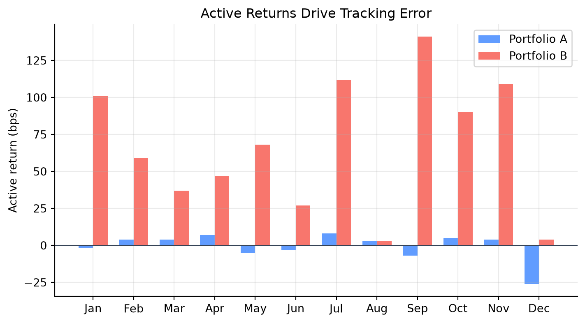
The intuition is direct: tracking error is not about whether returns are high or low. It is about whether the portfolio and benchmark move together. Portfolio B may outperform, but it is taking more active risk.
NoteExample: Tracking Error from a Bond Mandate
Suppose a core bond manager is benchmarked to a broad aggregate bond index. The manager’s monthly active returns over six months are:
| Month | Active return |
|---|---|
| 1 | +12 bps |
| 2 | -8 bps |
| 3 | +5 bps |
| 4 | +22 bps |
| 5 | -18 bps |
| 6 | +4 bps |
The average active return is:
\[ \bar{a}=\frac{12-8+5+22-18+4}{6}=2.83\text{ bps}. \]
The sample monthly tracking error is the standard deviation around that mean:
\[ \text{TE} = \sqrt{ \frac{\sum_{t=1}^{6}(a_t-\bar{a})^2}{6-1} } =14.7\text{ bps/month}. \]
Annualized:
\[ 14.7\sqrt{12}=50.9\text{ bps/year}. \]
This is a low-to-moderate active-risk profile for a benchmark-aware fixed-income mandate.
2.2 Two Faces of Tracking Error
Tracking error has two faces:
- Backward-looking tracking error: calculated from realized active returns. Also called historical, ex-post, or actual tracking error.
- Forward-looking tracking error: estimated from current holdings, factor exposures, factor volatilities, correlations, and idiosyncratic risks. Also called predicted or ex-ante tracking error.
Backward-looking tracking error is useful for performance review. Forward-looking tracking error is useful for portfolio construction and risk control.
NoteWhy Historical TE Can Mislead
Suppose a manager held a benchmark-like portfolio for 11 months and then, today, increases duration by 1.5 years and doubles the corporate overweight. The historical tracking error remains low because it reflects the old portfolio. The forward-looking tracking error changes immediately because the current exposures changed.
Forward-looking tracking error often comes from a multi-factor risk model:
\[ \text{Predicted TE} = \sqrt{ (\Delta \mathbf{x})' \Sigma_F (\Delta \mathbf{x}) +\sigma_{\epsilon}^2 }, \]
where \(\Delta \mathbf{x}\) is the vector of portfolio-minus-benchmark factor exposures, \(\Sigma_F\) is the factor covariance matrix, and \(\sigma_{\epsilon}^2\) is idiosyncratic active variance.
Here, an exposure means sensitivity to a risk factor. It answers: if this factor moves, how much should the bond or portfolio return move?
For a portfolio, factor exposure is usually a market-value-weighted average of security-level exposures:
\[ x_{p,k}=\sum_i w_{p,i}x_{i,k}, \]
where \(w_{p,i}\) is the portfolio weight of bond \(i\) and \(x_{i,k}\) is that bond’s exposure to factor \(k\). The benchmark exposure is calculated the same way:
\[ x_{b,k}=\sum_i w_{b,i}x_{i,k}. \]
The active exposure is then:
\[ \Delta x_k=x_{p,k}-x_{b,k}. \]
For example, if a bond has duration of 6.0 years and a 2% portfolio weight, it contributes \(0.02 \times 6.0=0.12\) years to portfolio duration. Adding this across all bonds gives total portfolio duration.
If active returns are approximately normal, tracking error gives a rough range of outcomes. If expected active return is zero and annual tracking error is 100 bps, then active return is within about +/-100 bps in roughly two-thirds of years and within about +/-200 bps in roughly 95% of years. This is a model-based statement, not a guarantee.
%%{init: {"theme": "base", "themeVariables": {"fontFamily": "Inter, Arial, sans-serif", "lineColor": "#64748b"}}}%%
flowchart LR
A["Backward-looking TE<br/>uses realized active returns"] --> B["Performance review<br/>what actually happened?"]
C["Forward-looking TE<br/>uses current holdings + risk model"] --> D["Risk control<br/>what could happen next?"]
E["Portfolio trades today"] --> C
E -. "not reflected until later" .-> A
classDef backward fill:#dbeafe,stroke:#2563eb,stroke-width:2.5px,color:#0f172a;
classDef forward fill:#dcfce7,stroke:#16a34a,stroke-width:2.5px,color:#052e16;
classDef trade fill:#fef3c7,stroke:#d97706,stroke-width:2.5px,color:#451a03;
class A,B backward;
class C,D forward;
class E trade;
linkStyle default stroke:#64748b,stroke-width:2.5px;
Historical tracking error is a realized statistic, while predicted tracking error is a current-position risk estimate. A manager controls future risk with the second measure, and assesses past performance with the first.
2.3 Tracking Error and Active versus Passive Strategies
Tracking error is the language of active versus passive management:
- Passive strategy: very low tracking error; the goal is to replicate the benchmark after costs.
- Enhanced indexing: modest tracking error; the goal is to stay close to the benchmark while adding small active tilts.
- Active strategy: larger tracking error; the manager intentionally differs from the benchmark.
The reason tracking error is useful is that it turns vague statements like “slightly active” into measurable risk budgets.
NoteNumerical Risk Budget Example
A client allows annual tracking error of 150 bps. The monthly tracking error budget is approximately:
\[ \frac{150}{\sqrt{12}}=43.3\text{ bps per month}. \]
If the optimizer predicts 65 bps of monthly tracking error, the portfolio violates the client’s risk budget even if the manager likes the trades.
| Strategy | Typical active risk | Main objective | |
|---|---|---|---|
| 0 | Pure indexing | Near zero | Replicate benchmark |
| 1 | Enhanced indexing | Low | Small active gains with tight risk control |
| 2 | Active benchmark-aware | Moderate to high | Outperform benchmark using views |
| 3 | Unconstrained / absolute return | Benchmark may not control risk | Maximize absolute or risk-adjusted return |
3 Cell-Based Approach to Bond Portfolio Construction
The cell-based approach divides the benchmark into buckets, or cells, based on characteristics that drive return. Common cells include:
- duration;
- maturity;
- coupon;
- sector;
- credit quality;
- call features;
- sinking fund features;
- mortgage coupon and collateral type.
The manager then selects representative securities for each cell. If a benchmark has 30% corporate bonds, a passive cell-based portfolio should allocate about 30% to corporate cells. If the manager believes corporates will outperform, the manager may overweight corporate cells and underweight other cells.
%%{init: {"theme": "base", "themeVariables": {"fontFamily": "Inter, Arial, sans-serif", "lineColor": "#64748b"}}}%%
flowchart LR
A["Benchmark index"] --> B["Partition into cells"]
B --> C["Duration buckets"]
B --> D["Sector buckets"]
B --> E["Credit buckets"]
B --> F["Optionality buckets"]
C --> G["Representative bonds"]
D --> G
E --> G
F --> G
G --> H["Portfolio weights<br/>match or tilt vs benchmark"]
classDef root fill:#dbeafe,stroke:#2563eb,stroke-width:3px,color:#0f172a;
classDef cell fill:#fef3c7,stroke:#d97706,stroke-width:2.5px,color:#451a03;
classDef portfolio fill:#dcfce7,stroke:#16a34a,stroke-width:2.5px,color:#052e16;
class A root;
class B,C,D,E,F cell;
class G,H portfolio;
linkStyle default stroke:#64748b,stroke-width:2.5px;
NoteWorked Example: Counting Cells
Suppose an investment-grade bond benchmark is divided by:
- duration: 2 groups, less than or equal to 5 years and greater than 5 years;
- maturity: 3 groups, less than 5 years, 5-15 years, 15+ years;
- sector: 4 groups, Treasury, agencies, corporates, agency MBS;
- credit quality: 4 groups, AAA, AA, A, BBB.
The number of cells is:
\[ 2\times3\times4\times4=96. \]
If the portfolio is only $50 million, filling 96 cells can force small odd-lot trades. Reducing the number of cells lowers transaction costs but increases mismatch risk.
The cell-based approach is intuitive and transparent. Its weakness is that it treats cells like separate boxes. It does not naturally account for correlations across cells. Two large cell mismatches may hedge each other, or two small mismatches may reinforce each other.
NoteExample: Sector Active Weights
Suppose a sampled portfolio differs from the benchmark by sector. The plot shows the active weights directly.
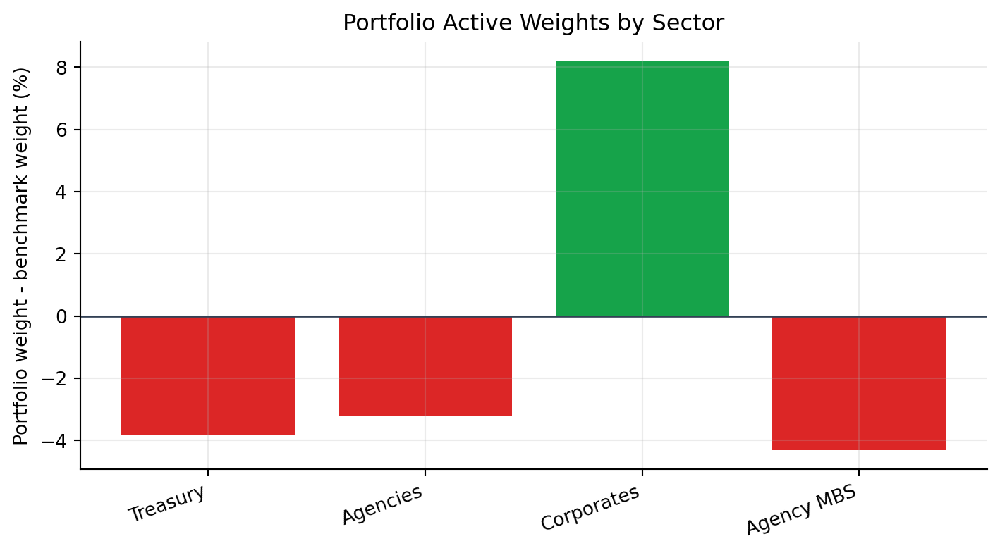
Complications in Bond Indexing
Pure bond indexing means buying every security in the benchmark at its benchmark weight. In practice this is often impossible or inefficient because broad bond indexes can contain thousands of issues.
Bond indexing is harder than equity indexing for several reasons:
- Many securities per issuer: one company can have dozens of bonds.
- Illiquidity: many bonds trade infrequently.
- Bid-ask spread: benchmark returns often use bid-side pricing, while portfolio purchases occur near ask-side prices.
- Index pricing: index provider prices may not be executable.
- Cash-flow reinvestment: coupons, maturities, calls, and amortization create cash to reinvest.
NoteTransaction Cost Example
Suppose a manager tries to buy 1,000 small bond positions and pays an average 12 bps bid-ask and execution cost. On a $100 million portfolio:
\[ 100{,}000{,}000\times0.0012=120{,}000. \]
That is 12 bps of immediate performance drag before any active decision is made.
The reason enhanced indexing exists is pragmatic. A manager samples the benchmark to reduce transaction costs and operational complexity, then controls the resulting mismatch with cells or factor exposures.
ImportantWhy the Cell Diagram Matters
The cell diagram is not just a classification picture. It shows the manager’s operational problem: a benchmark may contain thousands of bonds, but the portfolio might be able to hold only 100-300 names. The cell approach is a disciplined sampling rule that says, “If we cannot buy everything, at least match the major benchmark characteristics.”
The limitations are important enough to state directly:
| Limitation | Why it matters |
|---|---|
| Too many cells | Small portfolios are forced into odd lots and high transaction costs. |
| Too few cells | The portfolio can hide large maturity, sector, or credit mismatches. |
| Correlations ignored | Two cell mismatches may offset each other or reinforce each other. |
| Security selection inside cells | A representative bond may not behave like the whole cell. |
| Benchmark turnover | Index composition changes as bonds mature, are issued, or become ineligible. |
NoteNumerical Example: Hidden Risk Inside a Cell
Two portfolios both allocate 20% to BBB industrial bonds with 5-7 year maturities. Portfolio X holds 40 issuers at 0.5% each. Portfolio Y holds 4 issuers at 5% each. A cell-based report says both portfolios match the same cell, but Portfolio Y has much larger idiosyncratic issuer risk.
3.1 Portfolio Construction with Multi-Factor Models
Multi-factor models are the practical response to the covariance problem. Instead of estimating the covariance of every bond with every other bond, they estimate a smaller set of common risk factors.
For fixed income, factors often include:
- Treasury level, slope, and curvature;
- key rate duration points;
- swap spreads;
- corporate spread factors by rating and sector;
- securitized spread factors;
- interest-rate volatility;
- currency risk;
- issuer and issue residual risk.
Where the Model Inputs Come From
A risk model needs three types of inputs:
- Holdings and weights
- Security-level factor exposures
- Factor covariance and residual risk estimates
Holdings and weights come from the portfolio accounting system and the benchmark provider. For each bond, the manager needs market value, price, accrued interest, coupon, maturity, issuer, sector, rating, currency, and benchmark weight.
Security-level exposures usually come from analytics systems rather than being estimated manually. Common fixed-income exposures include:
| Exposure | Meaning | Example |
|---|---|---|
| Duration | Sensitivity to parallel interest-rate changes | A duration of 5 means a 100 bp yield rise is roughly a 5% price loss |
| Key rate duration | Sensitivity to specific maturity points on the yield curve | Exposure to the 2-year, 5-year, 10-year, or 30-year point |
| Spread duration | Sensitivity to credit or sector spread changes | A corporate bond may lose value if BBB spreads widen |
| Convexity | Curvature in the price-yield relationship | Long callable or mortgage bonds can behave differently when rates move |
| Sector / rating exposure | Weight or spread sensitivity by group | Overweight BBB industrials versus the benchmark |
| Issuer exposure | Active concentration in one issuer | Holding more JPMorgan bonds than the benchmark |
The factor covariance matrix, \(\Sigma_F\), is estimated from historical factor movements. A risk vendor or internal risk team collects time series of factor changes, such as Treasury curve shifts, spread changes, mortgage spread changes, volatility changes, and currency moves. The covariance matrix summarizes how volatile each factor is and how factors move together.
For example, Treasury rates and corporate spreads may be negatively correlated in a flight-to-quality episode: Treasury yields fall while credit spreads widen. A covariance matrix captures that relationship. Without it, the model would treat every active exposure as independent.
Residual variance estimates come from the part of bond returns not explained by the common factors. After accounting for duration, spread, sector, rating, and other modeled risks, some return variation remains issuer-specific or issue-specific. This residual risk is larger for concentrated positions, less liquid bonds, lower-rated issuers, and securities with unusual structures.
TipCross-Sectional Regression View
One practical way to estimate factor returns and residual risk is a repeated cross-sectional regression. On each date \(t\), the risk team regresses bond returns across many securities on their known exposures:
\[ R_{i,t}=\alpha_t+x_{i1,t}F_{1,t}+x_{i2,t}F_{2,t}+\cdots+x_{iK,t}F_{K,t}+\epsilon_{i,t}. \]
The estimated \(F_{k,t}\) values form a time series of factor returns or factor shocks. The covariance of those estimated factor returns becomes an input to \(\Sigma_F\). The unexplained residuals, \(\epsilon_{i,t}\), are used to estimate issuer-level or issue-level residual variances, often grouped by rating, sector, liquidity, and security type.
This is why clean prices, reliable returns, and broad cross-sectional coverage matter. Bad prices or stale marks can make the model think a security has idiosyncratic risk when the real problem is poor data.
In practice, brokers and data platforms can provide many of the raw inputs:
- prices, yields, spreads, and accrued interest;
- duration, spread duration, convexity, and key rate durations;
- issuer, sector, rating, maturity, coupon, and currency classifications;
- benchmark constituents and weights;
- market depth, bid-ask spreads, dealer runs, axes, and recent trade information;
- TRACE-style transaction data for corporate bonds where available.
However, brokers do not always provide a complete portfolio risk model. The full factor covariance matrix and residual risk model usually come from a dedicated risk system, benchmark analytics platform, or internal quantitative risk team. Broker data helps populate the model; the risk model converts those inputs into predicted tracking error.
NoteBroker Data Example
A broker screen may show that a BBB industrial bond has a price of 98.75, yield of 5.82%, option-adjusted spread of 145 bps, effective duration of 6.4, spread duration of 6.1, and an indicated bid-ask spread of 35 bps. Those fields help estimate the bond’s exposure and trading cost. They do not, by themselves, tell the manager how that bond covaries with Treasury, credit, mortgage, and liquidity factors inside the full portfolio.
The portfolio is compared with the benchmark factor by factor. Active risk comes from differences between portfolio exposures and benchmark exposures.
%%{init: {"theme": "base", "themeVariables": {"fontFamily": "Inter, Arial, sans-serif", "lineColor": "#64748b"}}}%%
flowchart TB
A["Current holdings"] --> C["Factor exposures"]
B["Benchmark holdings"] --> D["Benchmark exposures"]
C --> E["Active exposures<br/>portfolio - benchmark"]
D --> E
E --> F["Factor volatilities<br/>and correlations"]
E --> G["Issuer / issue residual risk"]
F --> H["Predicted tracking error"]
G --> H
H --> I["Risk control and optimizer"]
classDef holdings fill:#dbeafe,stroke:#2563eb,stroke-width:2.5px,color:#0f172a;
classDef exposure fill:#fef3c7,stroke:#d97706,stroke-width:2.5px,color:#451a03;
classDef model fill:#ede9fe,stroke:#7c3aed,stroke-width:2.5px,color:#2e1065;
classDef result fill:#dcfce7,stroke:#16a34a,stroke-width:2.5px,color:#052e16;
class A,B holdings;
class C,D,E exposure;
class F,G,H model;
class I result;
linkStyle default stroke:#64748b,stroke-width:2.5px;
A key advantage is scenario analysis. Before trading, the manager can ask:
- What happens to tracking error if duration is increased by 0.25 years?
- Which factor contributes most to active risk?
- Is the corporate overweight mostly spread risk or issuer-specific risk?
- Which trades reduce tracking error most per dollar of transaction cost?
Risk Decomposition
Risk decomposition answers a practical question:
If the portfolio underperforms the benchmark, what risk decision probably caused it?
For a benchmarked bond manager, risk is not only “how volatile is the portfolio?” The more relevant question is:
How differently can the portfolio behave from the benchmark?
That difference comes from active exposures. An active exposure is the portfolio exposure minus the benchmark exposure:
\[ \Delta x_k = x_{p,k} - x_{b,k}. \]
Examples:
- If portfolio duration is 5.60 and benchmark duration is 5.40, active duration is +0.20 years.
- If portfolio corporate spread duration is 3.10 and benchmark corporate spread duration is 2.40, active corporate spread duration is +0.70 years.
- If the portfolio holds 2.5% more of one issuer than the benchmark, it has issuer-specific active risk.
Risk decomposition separates these active exposures into three broad buckets:
| Bucket | What it captures | Example |
|---|---|---|
| Interest-rate risk | Active exposure to Treasury curve movements | Overweight 10-year key rate duration |
| Spread / sector risk | Active exposure to credit, mortgage, swap, or sector spreads | Overweight BBB industrial spread duration |
| Idiosyncratic risk | Issuer, issue, liquidity, and security-selection effects | Large position in one bank bond |
The point is not just to compute a number. The point is to identify whether the tracking error is intentional, compensated, and controllable.
Step 1: Isolate Each Factor
If factor \(k\) has volatility \(\sigma_k\), the isolated tracking error from that factor is:
\[ \text{Isolated TE}_k = |\Delta x_k|\sigma_k. \]
This is the active exposure times the volatility of the thing the portfolio is exposed to.
NoteNumerical Example: Active Exposures Become Tracking Error
Suppose a portfolio has the following active exposures relative to its benchmark:
| Risk factor | Active exposure | Monthly factor volatility | Isolated TE |
|---|---|---|---|
| Treasury level | +0.20 years | 30 bps | 6.0 bps |
| 2-year key rate | -0.10 years | 25 bps | 2.5 bps |
| 10-year key rate | +0.15 years | 35 bps | 5.25 bps |
| IG corporate spread | +0.60 years | 18 bps | 10.8 bps |
| Securitized spread | -0.25 years | 16 bps | 4.0 bps |
The largest isolated source of active risk is the IG corporate spread overweight. That does not automatically mean it is bad. It means the manager should be able to explain why this active credit exposure is intentional.
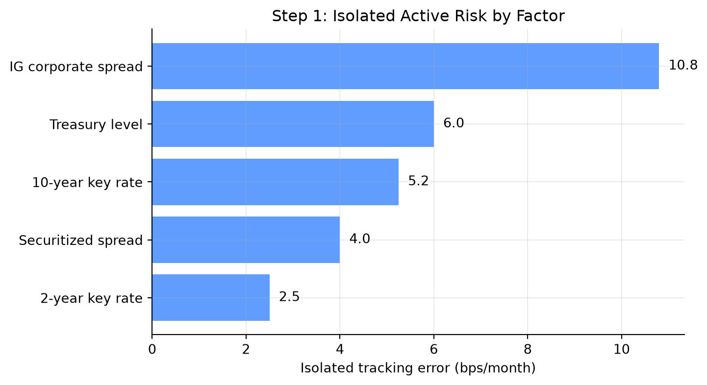
Step 2: Combine Factors Correctly
Tracking error is a standard deviation, so isolated tracking errors are not added directly. If factor correlations are zero, systematic tracking error is:
\[ \text{Systematic TE} = \sqrt{\sum_{k=1}^{K}\text{TE}_k^2}. \]
For the example above:
\[ \sqrt{ 6.0^2+2.5^2+5.25^2+10.8^2+4.0^2 } =14.23\text{ bps per month}. \]
Adding the isolated numbers would give:
\[ 6.0+2.5+5.25+10.8+4.0=28.55\text{ bps}. \]
| Method | Result (bps/month) | |
|---|---|---|
| 0 | Incorrect simple sum | 28.55 |
| 1 | Correct uncorrelated systematic TE | 14.23 |
That is not the correct tracking error. It treats all factors as if their worst movements arrive in the same direction at the same time.
Step 3: Correlations Can Reduce or Increase Risk
The zero-correlation formula is useful for intuition, but real factors are often correlated. Treasury yields, corporate spreads, mortgage spreads, and volatility can move together in stress periods.
With correlations, the systematic tracking error is:
\[ \text{Systematic TE} = \sqrt{(\Delta \mathbf{x})' \Sigma_F (\Delta \mathbf{x})}. \]
The covariance matrix matters because two active bets may offset each other or reinforce each other.
NoteTwo-Factor Correlation Example
Suppose the only active risks are:
- Treasury level isolated TE: 6 bps/month;
- IG corporate spread isolated TE: 10.8 bps/month.
If their correlation is zero:
\[ \sqrt{6^2+10.8^2}=12.35\text{ bps}. \]
If their correlation is +0.50:
\[ \sqrt{6^2+10.8^2+2(0.50)(6)(10.8)} =14.73\text{ bps}. \]
If their correlation is -0.50:
\[ \sqrt{6^2+10.8^2+2(-0.50)(6)(10.8)} =8.75\text{ bps}. \]
The same two isolated risks can produce very different total tracking error depending on how the factors move together.
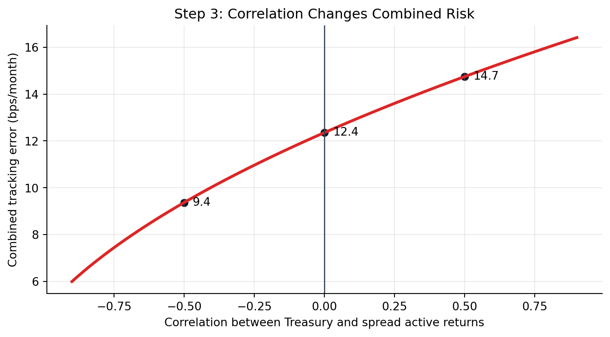
The plot shows why a risk model needs correlations, not just a list of active exposures. It shows how the correlation between two factors can reduce or increase total tracking error.
Step 4: Separate Systematic and Idiosyncratic Risk
The same idea applies to systematic and idiosyncratic active risk. If they are modeled as independent:
\[ \text{Total TE} = \sqrt{\text{Systematic TE}^2+\text{Idiosyncratic TE}^2}. \]
Systematic risk is exposure to common factors. Idiosyncratic risk is the remaining issuer or security-specific active risk.
Using the uncorrelated systematic tracking error from above, suppose idiosyncratic tracking error is 8.0 bps/month:
\[ \text{Total TE} =\sqrt{14.23^2+8.0^2} =16.33\text{ bps/month}. \]
| Component | bps/month | bps/year | |
|---|---|---|---|
| 0 | Systematic TE | 14.23 | 49.29 |
| 1 | Idiosyncratic TE | 8.00 | 27.71 |
| 2 | Total TE | 16.32 | 56.55 |
This distinction matters in bond portfolios because the benchmark may contain thousands of small issuer positions. A sampled portfolio may match duration and sector exposures well, but still have issuer concentration risk.
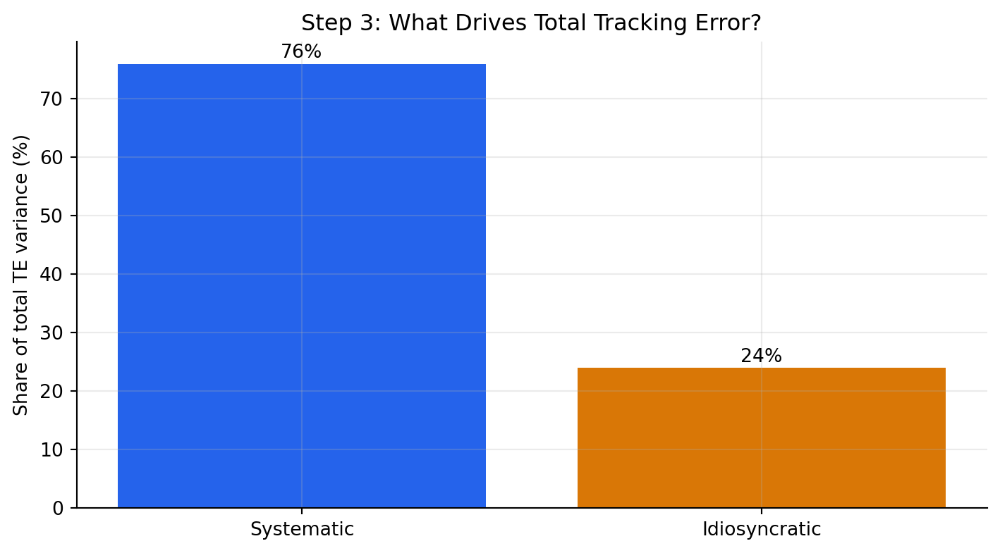
Step 5: Convert Exposures into Scenario Returns
Tracking error is a volatility estimate. Managers also need to understand the sign of the exposure. A simple scenario turns the same factor exposures into an active return estimate.
For duration-like exposures:
\[ \Delta R_{\text{active}} \approx -(\text{active exposure})(\text{factor change}). \]
Using the earlier active exposures, suppose over one month:
| Factor | Active exposure | Factor change |
|---|---|---|
| Treasury level | +0.20 years | +40 bps |
| 2-year key rate | -0.10 years | +20 bps |
| 10-year key rate | +0.15 years | +50 bps |
| IG corporate spread | +0.60 years | +25 bps |
| Securitized spread | -0.25 years | +15 bps |
The total approximate active return is:
| Measure | bps | |
|---|---|---|
| 0 | Total approximate active return | -24.75 |
In this scenario, the portfolio underperforms because it is long duration and long corporate spread duration in a month when rates rise and spreads widen. The negative securitized spread exposure helps slightly because securitized spreads also widen.
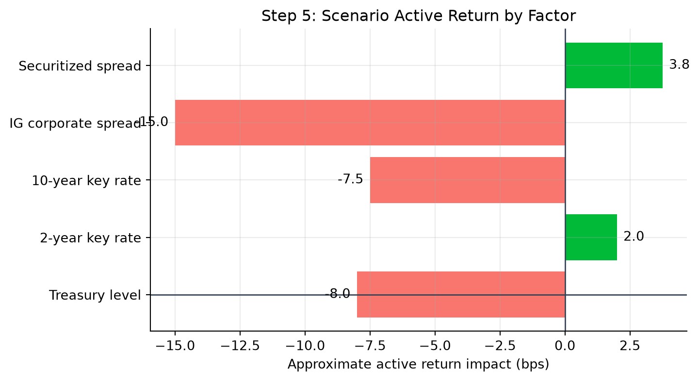
This plot shows the sign of each active bet in a specific market move. The isolated TE plot shows size; the scenario plot shows direction.
Step 6: Key Rate Decomposition Shows Curve-Shape Risk
Total duration can hide curve-shape risk. Two portfolios can both have duration 5.4, but one may be overweight the 2-year point while the other is overweight the 10-year point.
Suppose the portfolio and benchmark have these key rate durations:
| Key rate | Portfolio KRD | Benchmark KRD | Active KRD | |
|---|---|---|---|---|
| 0 | 2Y | 0.70 | 1.0 | -0.30 |
| 1 | 5Y | 1.35 | 1.3 | 0.05 |
| 2 | 10Y | 2.10 | 1.7 | 0.40 |
| 3 | 30Y | 1.25 | 1.4 | -0.15 |
The total active duration is:
\[ -0.30+0.05+0.40-0.15=0.00. \]
So a simple duration report says the portfolio is matched to the benchmark. But it is not neutral to curve shape.
If the curve steepens with the 2-year yield falling 20 bps and the 10-year yield rising 40 bps, the active return impact is:
\[ -(-0.30)(-20)-(+0.40)(+40) =-6-16=-22\text{ bps}, \]
before including the smaller 5-year and 30-year effects. The portfolio loses because it is underweight the front end and overweight the 10-year point in this steepening scenario.
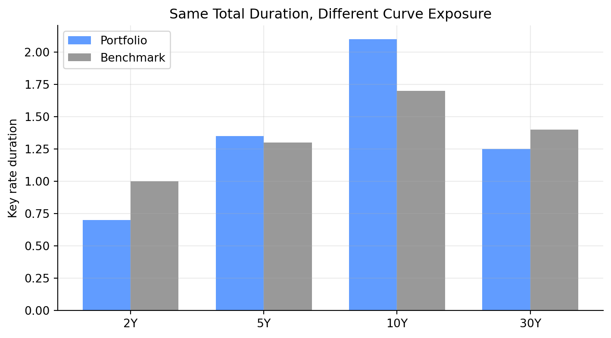
This plot compares where the portfolio and benchmark have their rate exposure.
Step 7: Translate the Decomposition into a Decision
Risk decomposition should lead to an action. A manager uses it to decide which risk is intentional, which risk is accidental, and which risk should be hedged or reduced.
| Diagnostic question | Example decision |
|---|---|
| Is this risk intentional? | Keep a corporate spread overweight if it reflects a credit view. |
| Is this risk compensated? | Reduce issuer concentration if it adds TE without expected alpha. |
| Is this risk hedgeable? | Use Treasury futures to neutralize unwanted duration. |
| Is this risk diversifiable? | Replace a concentrated issuer position with several similar bonds. |
The full picture is:
- Holdings create exposures.
- Active exposures create active return sensitivity.
- Factor volatilities and correlations convert those sensitivities into predicted tracking error.
- Idiosyncratic issuer and issue risk is added separately.
- The manager decides which active risks are deliberate and which should be reduced.
Risk decomposition is therefore a bridge between portfolio analytics and portfolio construction. It turns a single tracking-error number into a set of specific decisions.
Portfolio Construction Using a Multi-Factor Model and an Optimizer
A multi-factor model measures the risk of any proposed portfolio. An optimizer searches across many possible portfolios and chooses the one that best satisfies the manager’s objective subject to constraints.
The decision variables are the portfolio weights or dollar amounts in each candidate security:
\[ \mathbf{w}=(w_1,w_2,\ldots,w_N). \]
Given those weights, the optimizer can compute portfolio exposures, active exposures, predicted tracking error, expected active return, transaction cost, issuer concentration, sector weights, and liquidity usage. The optimizer is therefore not choosing bonds in isolation. It is choosing a full portfolio whose combined exposures fit the mandate.
The main inputs are:
| Input | Why it matters |
|---|---|
| Tradable universe | Defines which bonds the optimizer is allowed to buy or sell |
| Current holdings | Determines starting exposures, taxable lots, turnover, and trade sizes |
| Benchmark holdings and exposures | Defines the active risk comparison |
| Security prices and accrued interest | Converts weights into dollar trades and market value |
| Expected active returns or manager views | Rewards desired tilts such as credit overweight or curve steepener |
| Factor exposures and covariance estimates | Converts holdings into predicted tracking error |
| Bid-ask spreads and transaction costs | Penalizes trades that are too expensive to justify |
| Issuer, sector, duration, spread, liquidity, and turnover limits | Keeps the solution investable and mandate-compliant |
The objective depends on the mandate. A passive or enhanced-indexing portfolio may minimize tracking error:
\[ \min_{\mathbf{w}} \ \text{Predicted TE}(\mathbf{w}). \]
An active benchmark-aware portfolio may instead maximize expected active return after risk and cost penalties:
\[ \max_{\mathbf{w}} \left[ E(R_p-R_b) -\lambda \text{Predicted TE}(\mathbf{w})^2 -\text{Transaction Cost}(\mathbf{w}) \right]. \]
The parameter \(\lambda\) controls risk aversion. A larger \(\lambda\) forces the optimizer to care more about tracking error; a smaller \(\lambda\) allows more active risk if expected active return is attractive.
The constraints are often more important than the objective. They define what portfolios are allowed:
| Constraint type | Example |
|---|---|
| Budget | Portfolio market value must equal available capital |
| Long-only | No short positions: \(w_i \ge 0\) |
| Risk budget | Predicted tracking error must be below the client limit |
| Duration | Active duration must stay between -0.25 and +0.25 years |
| Sector | Corporate active weight must stay within +/-5% |
| Issuer | Active issuer weight cannot exceed 3% |
| Liquidity | Avoid bonds below a minimum issue size or trading frequency |
| Trade size | Avoid tiny odd-lot trades that are operationally inefficient |
| Turnover and cost | Total transaction cost must stay below a budget |
This is why optimization is useful: the manager can express a view, such as “overweight credit modestly,” while the optimizer finds the cheapest and lowest-risk way to implement that view without violating duration, issuer, liquidity, or tracking-error limits.
Sometimes the constraints conflict. A 50-bond limit, a tight tracking-error budget, a large credit overweight, and a low transaction-cost budget may not all be feasible at once. In that case, the optimizer does not solve the economic problem for the manager; it reveals the tradeoff that must be relaxed.
NoteExample: Building a 50-Bond Enhanced Index Portfolio
Suppose the benchmark has duration 5.41, spread duration 5.27, and a sector allocation of one-third Treasuries, one-third credit-like sectors, and one-third agency MBS. A manager wants a $100 million portfolio with:
- no more than 50 bonds;
- no short sales;
- duration at least 0.15 years above the benchmark but no more than 0.30 years above;
- spread 50-80 bps higher than the benchmark;
- monthly tracking error below 15 bps;
- maximum active issuer weight of 3%.
One candidate portfolio has:
| Measure | Portfolio | Benchmark | Difference |
|---|---|---|---|
| Duration | 5.56 | 5.41 | 0.15 |
| Spread duration | 5.37 | 5.27 | 0.10 |
| Convexity | 0.11 | 0.06 | 0.05 |
| Spread | 107 bps | 57 bps | 50 bps |
The portfolio satisfies the duration and spread tilt constraints. The remaining question is whether those tilts fit inside the tracking error budget.
NoteToy Optimizer Example: Choosing Representative Bonds
Suppose a manager has $10 million to invest and wants to approximate a benchmark with duration near 5.0, spread duration near 3.0, at least 30% in Treasuries for liquidity, and no more than 40% in corporates. The table shows a small tradable universe and one feasible set of chosen weights:
| Bond | Yield (%) | Duration | Spread duration | Sector | Weight chosen (%) | |
|---|---|---|---|---|---|---|
| 0 | Treasury 5Y | 4.3 | 4.6 | 0.0 | Treasury | 25 |
| 1 | Treasury 10Y | 4.6 | 8.2 | 0.0 | Treasury | 15 |
| 2 | Agency MBS | 5.1 | 4.1 | 3.2 | MBS | 25 |
| 3 | A industrial | 5.4 | 5.7 | 5.4 | Corporate | 20 |
| 4 | BBB financial | 6.0 | 6.1 | 5.8 | Corporate | 15 |
The optimizer is choosing the weights. In this toy version, the constraints are:
\[ \sum_i w_i=1,\quad w_i\ge 0, \]
\[ \sum_i w_i\mathbf{1}_{\text{Treasury},i}\ge 30\%, \quad \sum_i w_i\mathbf{1}_{\text{Corporate},i}\le 40\%. \]
It also tries to keep weighted-average duration and spread duration near the target:
\[ \sum_i w_iD_i \approx 5.0, \quad \sum_i w_iSD_i \approx 3.0. \]
The selected weights are not the result of a full industrial optimizer, but the logic is the same: candidate bonds are combined so portfolio exposures land near target exposures while satisfying constraints. A real optimizer would also include issuer caps, minimum lot sizes, transaction costs, taxes, and predicted tracking error.
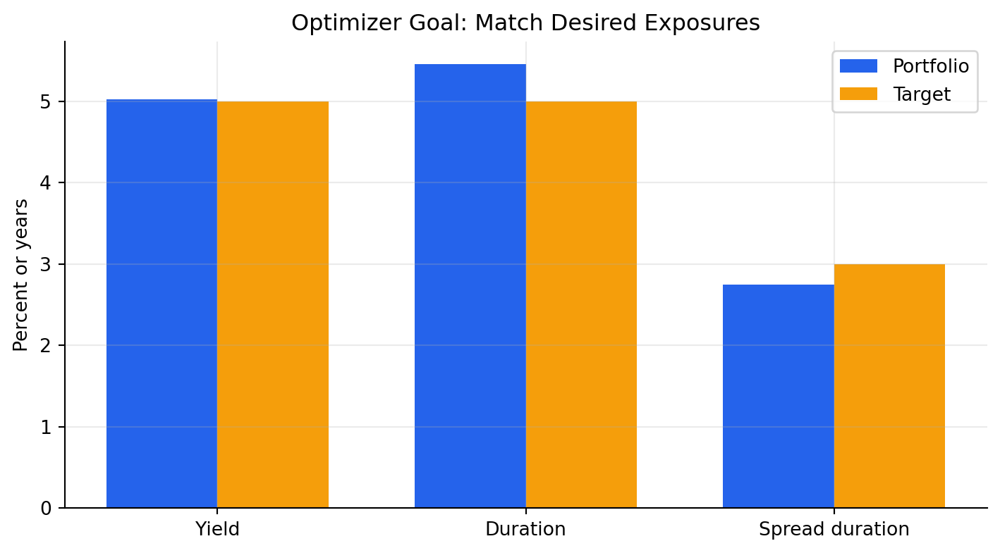
%%{init: {"theme": "base", "themeVariables": {"fontFamily": "Inter, Arial, sans-serif", "lineColor": "#64748b"}}}%%
flowchart LR
A["Manager views<br/>duration, spread, sector"] --> C["Objective function<br/>min TE or maximize alpha per TE"]
B["Client constraints<br/>risk budget, issuers, sectors"] --> C
D["Tradable universe<br/>prices, liquidity, costs"] --> C
E["Factor risk model<br/>exposures + covariance"] --> C
C --> F["Optimizer"]
F --> G["Candidate portfolio"]
G --> H{"Accept risk<br/>and cost?"}
H -->|Yes| I["Trade list"]
H -->|No| B
classDef input fill:#dbeafe,stroke:#2563eb,stroke-width:2.5px,color:#0f172a;
classDef objective fill:#fef3c7,stroke:#d97706,stroke-width:2.5px,color:#451a03;
classDef output fill:#dcfce7,stroke:#16a34a,stroke-width:2.5px,color:#052e16;
classDef decision fill:#ede9fe,stroke:#7c3aed,stroke-width:3px,color:#2e1065;
class A,B,D,E input;
class C,F objective;
class G,I output;
class H decision;
linkStyle default stroke:#64748b,stroke-width:2.5px;
The reason optimization is valuable is not that it replaces judgment. It makes tradeoffs explicit. If the manager wants more corporate spread exposure, the optimizer shows which bonds add that exposure with the least tracking error, issuer concentration, and transaction cost.
A manager should read the optimizer output as a diagnostic report:
| Output | Question to ask |
|---|---|
| Predicted tracking error | Is the portfolio inside the active-risk budget? |
| Factor risk decomposition | Which exposures are driving active risk? |
| Trade list | Are the trades executable in realistic size? |
| Transaction cost estimate | Is the expected benefit large enough to pay for the trades? |
| Constraint shadow prices or binding constraints | Which limits are forcing the solution? |
| Issuer and sector active weights | Is the portfolio taking unintended concentration risk? |
If a constraint is binding, the optimizer is telling the manager that the limit matters. For example, if the issuer cap is binding, the manager cannot add more of the preferred bond without reducing another position in the same issuer or relaxing the mandate.
TipOptimizer Intuition
The optimizer is a disciplined negotiation between views and constraints. Views say where the manager wants exposure. Constraints say how much exposure the client, market liquidity, and risk budget will allow.
Portfolio Rebalancing
In practice, managers usually rebalance existing portfolios rather than build from cash. Rebalancing is required when:
- benchmark weights change;
- bonds mature, are called, or amortize;
- credit ratings change;
- client cash flows arrive or leave;
- manager views change;
- risk exposures drift outside limits.
The objective is not simply to reduce tracking error. It is to reduce tracking error or improve expected active return net of transaction costs.
NoteRebalancing Example
Suppose a portfolio has become overweight banks by 8%, but the manager wants the bank overweight capped at 5%. The optimizer is allowed no more than 15 trades. It proposes:
- sell $5 million of bank bonds;
- buy $2 million Treasuries;
- buy $1.5 million agency MBS;
- buy $1.5 million industrial corporates.
Before trading, the manager compares risk:
| Metric | Before | After |
|---|---|---|
| Systematic TE (bps/month) | 4.6 | 4.2 |
| Idiosyncratic TE (bps/month) | 7.8 | 7.8 |
| Total TE (bps/month) | 9.0 | 8.8 |
If the trades cost 6 bps and reduce monthly tracking error by only 0.2 bps, the manager must decide whether the risk reduction is worth the cost.
In this example, the manager does not need to eliminate every active position. The goal is to bring the portfolio back inside risk limits while preserving intentional views. The after-trade portfolio still has a corporate overweight, but the bank overweight, issuer concentration, duration gap, and predicted tracking error are now within limits.
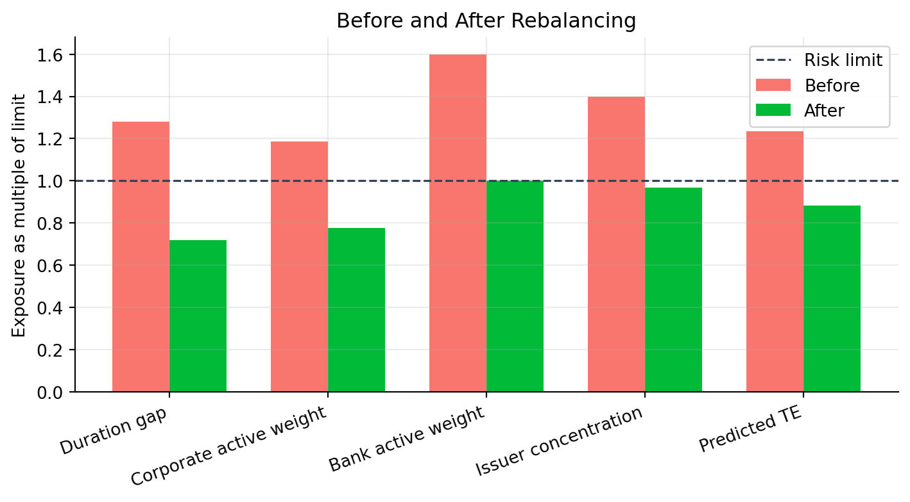
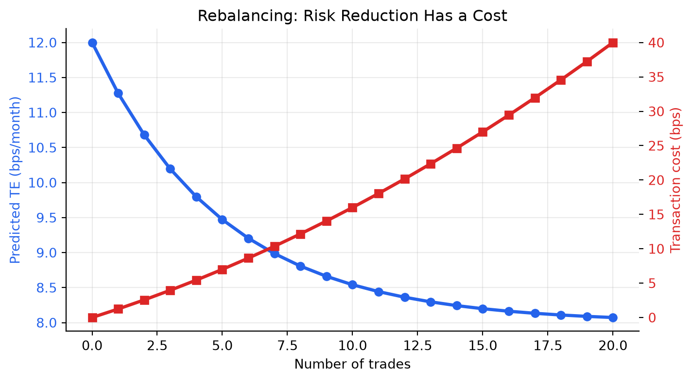
The intuition is that the first few trades often remove the largest unwanted exposures. Later trades may add complexity and transaction cost without much additional risk reduction. Good portfolio construction is therefore not just optimization; it is disciplined risk budgeting under real trading frictions.
NoteHow to Read the Rebalancing Plots
The before/after plot teaches control: which exposures breach limits and which trades fix them. The tradeoff plot teaches cost discipline: after a certain point, additional trades may lower tracking error only slightly while transaction costs keep rising.
3.2 Key Points
- Bond portfolio construction is usually benchmark-aware, so tracking error is often more useful than total portfolio volatility.
- Historical tracking error measures realized active returns; predicted tracking error uses today’s holdings, exposures, covariance estimates, and residual risk.
- A factor exposure, \(x_{i,k}\), measures how sensitive bond \(i\) is to factor \(k\). Portfolio and benchmark exposures are weighted averages of security-level exposures.
- Active exposure, \(\Delta x_k=x_{p,k}-x_{b,k}\), is the source of active risk relative to a benchmark.
- Factor covariance matters because active risks can offset each other or reinforce each other.
- Idiosyncratic risk remains important in bond portfolios because benchmark replication is difficult and issuer positions can be concentrated.
- Cell-based indexing is transparent, but it can miss correlations and security-specific risk inside cells.
- Multi-factor models and optimizers help managers translate views, constraints, trading costs, and risk budgets into implementable portfolios.
- Rebalancing should focus on risk that is large, unintended, uncompensated, or outside the client’s limits.
4 Suggested Readings
Fabozzi – Bond Markets, Analysis, and Strategies:
Chapter 25: Bond Portfolio Construction